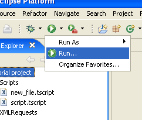
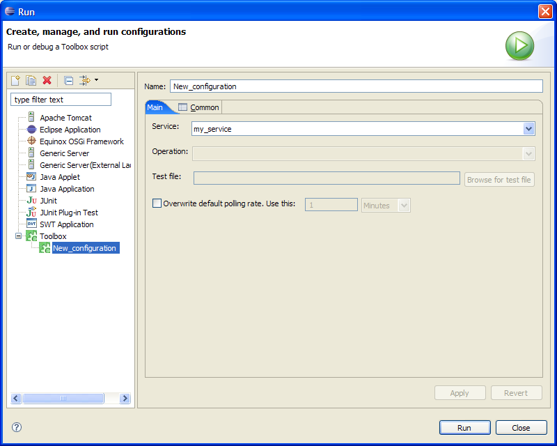
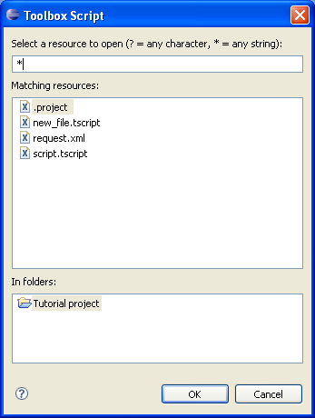

To create a new launch configuration, click on the arrow at the right of the run icon. From the shown menu, select "Run". This action will show a new frame that let the user manage launch configurations.

To add a new configuration for the Toolbox script execution, select the "Toolbox" item and click on the "New" icon. A new launch configuration is created.

The "Service", "Operation" and "Test file" let you specify the target of your execution and its input message. Each field is activated after selecting the parent field. The test file can be selected both entering its path or selecting it graphically. In the latter case you can click on the "Browse" button, activating a search frame (like the one shown in the image on the right). Typing a search criteria on the top field of this frame will cause the visualization of all elements of the project matching that criteria. Selecting one of them and clicking on the "Ok" button will fill automatically the "Test file" field.

The last field, when activated, will let you overwrite the polling rate associated to the operation. This will let you perform faster test when needed.To finalize, click "Apply". If you want to test the new configuration, click "Run".